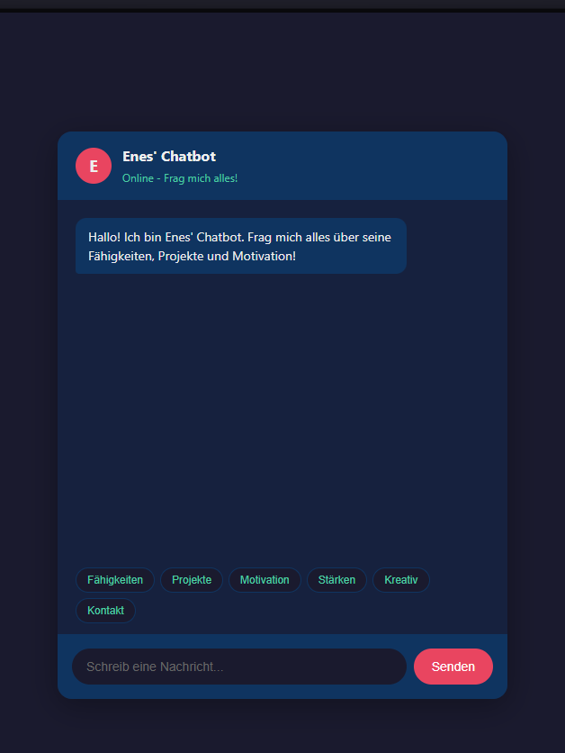
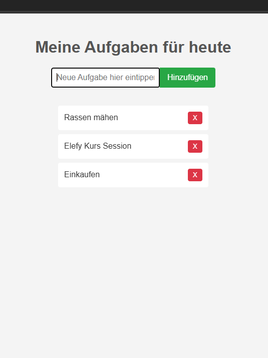

Meine Projekte
Hier, ist mein github
Chatbot mit Informationen über mich und hier ist der link

Über dieses Projekt
Dieser Chatbot ist mein Portfolio-Projekt — eine interaktive Möglichkeit, mehr über meine Fähigkeiten, Projekte und Motivation zu erfahren.
Technologien: Java (Konsolen-Version) HTML / CSS / JavaScript (Web-Version)
Features & Funktionen:
Schlüsselwortbasierte Antwortlogik
Input-Normalisierung (Umlaute, Groß-/Kleinschreibung, Satzzeichen)
Kontextbewusste Fallbacks bei Off-Topic-Fragen
Bedeutung-Raten bei unklarem Input
Mehrere Antwortvarianten pro Thema
Dies ist meine To-Do Liste auch

To-Do-App (JavaScript)- Konsolenanwendung zur Verwaltung von Aufgaben
- Funktionen: Hinzufügen, Löschen, Anzeigen, Speichern in Datei
- Umsetzung mit objektorientierter Programmierung
- Eigenständige Entwicklung und Fehlerbehebung